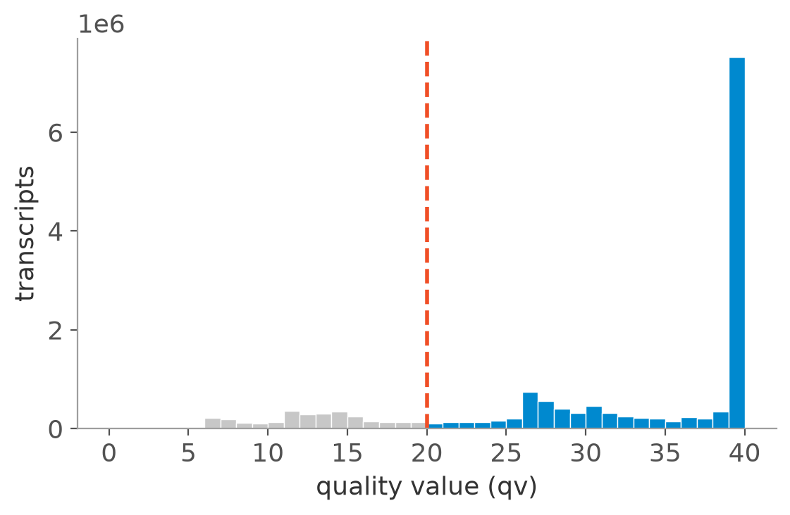

Quality control · molecules
Is each dot really that gene? The quality value
Data
QC
Filter
Normalize
Cluster
Markers
The qv uses the same scale as base qualities in FASTQ files (Phred):
qv = −10 · log10( Pwrong gene )
Every +10 means 10× fewer wrong calls. Try it:
chance the gene is wrong
{{pText}}
that is about
1 in {{oneIn}}
Xenium keeps only dots with qv ≥ 20 (≤ 1 wrong in 100) for the count table.

82%
of the 15.6 M gene transcripts in our run pass qv ≥ 20 and enter the count table (12.8 M)
A low pass rate points to problems with imaging or the tissue: check the images.
Phred-style Q-score per decoded transcript, Q ≥ 20 used: Janesick et al., Nat Commun 2023. Numbers: transcripts.parquet of the Practical 2 dataset.